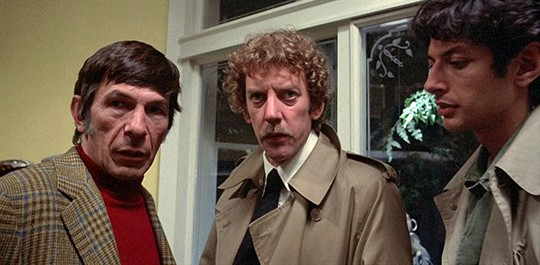

I’ve always had a problem with horror movies, and it took me a long time to figure out why. It’s not the blood, the sex, the screaming, or any of that. It’s that most horror films have problems with ridiculously easy solutions — characters who could survive if they had half a brain.
But that's not the case with "Invasion of the Body Snatchers (1978)." This is a movie that keeps you on the edge of your seat, with a plot that is both thought-provoking and genuinely frightening. Every scene pushes the tension higher and makes you wonder, "What the hell happens next?" It knows how to build dread the right way.
Just from the first few scenes, we can already tell something is not right. The atmosphere is thick with paranoia and the feeling that anyone could be the enemy. Philip Kaufman makes that clear through his camera work — the angles, the framing, the way he catches characters reacting to things they don’t understand. Each scene feels like it’s shot from a slightly different perspective, which keeps you on edge. I don’t think I’ve seen another movie use this technique so effectively… unless my memory really is that bad.
The casting is both iconic and memorable. Donald Sutherland delivers a chilling performance as he carries the film, and Brooke Adams brings a grounded realism that balances the surreal horror-she makes you feel the fear, confusion, and desperation in a way that hits hard and feels real.
Jeff Goldblum also adds a unique touch to the film, bringing a mix of charm and unease that fits perfectly with the movie's tone. He has a lot of talent, and this was before he started taking leading roles. I think it was only after he started taking leading roles, Hollywood realized he had talent.
And then there’s Leonard Nimoy as Dr. David Kibner. What can I even say? For so long, people only knew him as Spock, so seeing him play a villain was—quite logical, Captain. Jokes aside, Nimoy brings real nuance to the role. He never yells, never breaks composure, and speaks with a calm, soothing tone that somehow makes him even more terrifying. They say calm rage is the scariest rage, and they’re right. Even his blank expressions make him unsettling to look at.
If I do have one complaint about this movie, it's how Kibner's character doesn't have a proper sendoff. After Elizabeth (Brooke Adams) knocks him on the back of his head, Matthew (Donald Sutherland) throws him in the freezer to die. I don't know if it's just me, but I felt that was an underwhelming exit. I'm not sure if this had something to do with script changes or if this is how it was written. Either way, I didn't like it.
The special effects are another thing I really enjoyed. For 1978, the pod and makeup work is shockingly effective and creepy as hell. It didn’t scare the living crap out of me, but it made my skin crawl in all the right ways. Add that incredible sound design on top of it, and you’ve got a combination that raises arm hair and gives you goosebumps without relying on cheap tricks.
I'm aware there are other remakes for this film, plus the original 1955 film. I think I'm just going to stick with this one for now. Probably because of how great of a movie it is.
Side note, Jeff Goldblum's character, Jack Bellicec said his character weighs 170lbs. But we see Goldblum take off his shirt, which is all skin and bones. You're telling me that man is 170 lbs? Young Goldblum, at best weights somewhere along the lines of 140-150lbs. Unless he was carrying that weight somewhere else if you know what I mean.